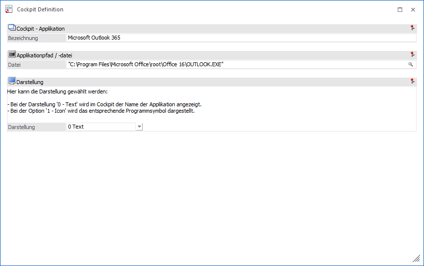

Mit dem Element "Applikation" kann direkt aus dem Cockpit heraus ein beliebiges anderes - auf dem PC installiertes - Programm (z.B. ein Textverarbeitungsprogramm oder die Bankensoftware) gestartet werden.

Die folgenden Einstellungen können vorgenommen werden:
Ø Bezeichnung
An dieser Stelle erfolgt die Eingabe der Bezeichnung, welche in weiterer Folge im Cockpit angezeigt werden soll.
Ø Datei
An dieser Stelle wird der Pfad inklusive Datei des Programms angegeben, welches gestartet werden soll. Es können alle Dateien mit der Erweiterung .EXE, .COM, .BAT oder .CMD angesprochen werden. Durch Drücken der F9-Taste (Matchcodefunktion) kann nach allen entsprechenden Dateien gesucht werden.
Ø Darstellung
Aus der Auswahlliste kann gewählt werden, wie die Darstellung im Cockpit erfolgen soll. Dabei gibt es 2 Möglichkeiten:
ü 0 - Text
Es wird nur der Name
des Eintrages dargestellt.
ü 1 - Icon
Es wird nur das Icon,
welches in der Cockpit Übersicht zugewiesen wird, dargestellt.